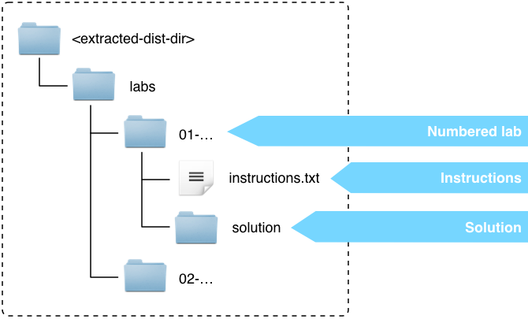
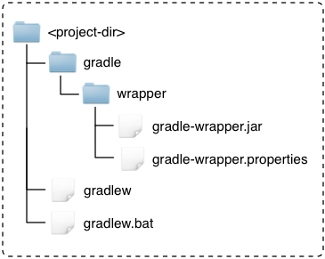
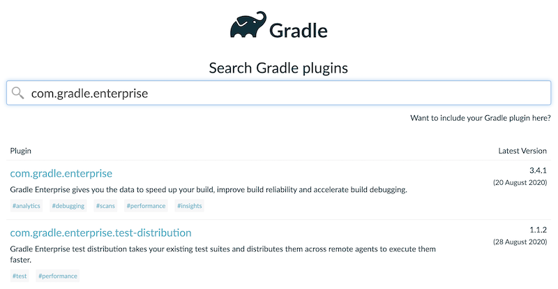

Slides
- Available in different formats
- Same content as today's presentation

The fundamentals of building projects with Gradle
You must have a JDK and the latest version of Gradle installed.
See the setup-instructions.pdf in your class materials for download links to install a JDK and Gradle.
If you're behind a proxy, follow the setup instructions to configure Gradle to use your proxy.

About the project
Gradle is a build and automation tool.
Gradle can automate the building, testing, publishing and deployment of your software.
User Manual
Build Language Reference (gradle.org/docs/current/dsl/)
Print command line options:
$ gradle -?Print the available tasks in a project:
$ gradle tasksPrint basic help information:
$ gradle helpGetting help on a specific task
$ gradle help --task tasknameA way to make sure everyone uses the same version of Gradle to build a project.

GRADLE_USER_HOME/wrapper/dists directory Running a build with the wrapper:
$ ./gradlew buildThe very first time you run a build with the wrapper, Gradle will download a copy of the distribution.
wrapper task$ gradle wrapper --gradle-version=6.6.1--gradle-version flag lets you specify a particular version of Gradle to use.--distribution-type flag lets you specify all if you want the complete distribution (the default is bin). The result is larger, but includes the source and documentation.01-wrapper
We encourage you to generate a build scan if you have a problem with a lab, so we can help you solve your problem. Just run your build with --scan.
02-create-build-scan
Gradle is implemented in Java, with Kotlin and Groovy DSL layers.
Kotlin and Groovy bring:
.gradle.kts are compiled as Kotlin code.gradle are compiled as Groovy codebuild.gradle[.kts]) delegate to org.gradle.api.Projectsettings.gradle[.kts]) delegate to org.gradle.api.initialization.SettingsrootProject.name = 'name-of-build'
include "subproject"
include "another-subproject"plugins {
id 'java'
}
repositories {
jcenter()
}
dependencies {
implementation 'com.google.guava:guava:29.0-jre'
}A key concept to grasp.
Tasks are the basic unit of work in Gradle.
tasks.register("helloWorld") {
doLast {
println "Hello World!"
}
}
// Old, but still valid syntax you'll see:
task helloWorld {
doLast {
println "Hello World!"
}
}All tasks implement the Task interface.
Tasks have a list of actions.
tasks.register("hello") {
doLast {
println "World!"
}
doFirst {
println "Hello"
}
}Most tasks have one useful main action.
doLast() and doFirst() can be used to add actions to any task.
The built-in task tasks lists available tasks in a project, either defined in the build script or provided by applied plugins.
$ gradle tasksTasks in the output are organized by assigned group property e.g. Build Setup show up under the header Build Setup tasks.
The description property describes the purpose of a task.
Every Gradle project provides several tasks out-of-the-box.
Built-in tasks provide useful and commonly used functionality without having to apply any plugins.
Examples:
wrapper - Generates the Wrapper files for this build.help - Demonstrates how to run Gradle from the command line.dependencies - Renders a tree of dependencies defined in the build.By default, the tasks report only shows tasks that have been assigned a group.
tasks.register("hello") {
group = 'Gradle Training"
description = 'Prints a message.'
doLast {
println "Hello World!"
}
}> gradle tasks
...
Gradle Training tasks
---------------------
hello - Prints a message.Task without a group property can be found by running tasks --all.
tasks.register("bye") {
doLast {
println "Bye World!"
}
}The Other tasks bucket lists all tasks without a group.
> gradle tasks --all
...
Other tasks
---------------------
bye03-tasks
Save your fingers by only typing the bare minimum to identify a task.
tasks.register("myNameIsKindaLong") {
doLast {
println "long task!"
}
}> gradle mNIKLGradle understands how to match against camel-case task names. Ambiguous matches fail the build.
// access existing task via its name
hello.dependsOn otherTask
// configure existing task via closure
hello {
dependsOn otherTask
}
// configure new task
tasks.register("greet") {
dependsOn otherTask
doLast { println "Hello Gradler!" }
}Tasks can be expensive to create, so Gradle has APIs to avoid creating and configuring tasks.
You will usually use tasks of a certain type, that provide useful behavior (e.g. copy files).
tasks.register("copyFiles", Copy) {
// Only configuration (actions are defined by the type)
from('someDirectory')
into('anotherDirectory')
}Task is of type Copy. Configure it using its API.
If you don't specify a type, you get a DefaultTask.
tasks.register("hello") {
onlyIf { day == "monday" }
doFirst { println "Hello" }
}The onlyIf() method is a method of all tasks (i.e. part of Task interface).
tasks.register("copy", Copy) {
from "someDir"
into "anotherDir"
}The from() method here is part of the Copy API.
A task's API allows you to configure the task.
DefaultTask@org.gradle.api.tasks.TaskActionabstract class FtpTask extends DefaultTask {
String host = "docs.mycompany.com"
@TaskAction
void ftp() {
// do something complicated
}
}04-custom-tasks
Prefer implementing task types to implementing ad-hoc tasks.
Ad-hoc tasks are OK for small simple tasks.
tasks.register("foo")
// multiple ways to declare task dependencies
bar { dependsOn foo }
bar.dependsOn fooThe order that tasks are executed in can be optimized.
tasks.register("unitTests") {}
tasks.register("integrationTests") {
mustRunAfter unitTests
// or: shouldRunAfter unitTests
}Task.mustRunAfter - if this task executes, Gradle must run it after the given task. Task.shouldRunAfter - Weaker form of mustRunAfter. Gradle may run the tasks in another order if no other tasks are ready.
With no relationship between tasks, task order is undefined.
Runs a task even if a preceding task has failed.
tasks.register("startWebServer") {}
tasks.register("stopWebServer") {}
tasks.register("integrationTests") {
dependsOn startWebServer
finalizedBy stopWebServer
}Often used for releasing resources (cf. Java's try-finally).
05-task-dependencies
FileCollection, FileTree)Gradle provides support for common operations out of the box (e.g. zip, copy, delete).
Important file related properties:
projectDir - the base directory of the projectbuildDir - the build output directory of the projectrootDir - the base directory of the root project (multi-project)The buildDir is "$projectDir/build" by default.
In plugins, don't assume this. Use "$buildDir".
Don't do this:
new File("src/main/java/Thing.java")You don't know what the working directory of the JVM is.
Use:
project.file("src/main/java/Thing.java")Project.file(Object) always resolves relative to the projectDir.
Many tasks accept Object for file types; resolved by project.file().
Copies files from one or more locations, to one destination.
tasks.register("copyLibs", Copy) {
from "libsDir", "docs/index.html", "/some.txt"
into "ide"
}Powerful API, including filtering and transforming.
API has a tree like structure.
tasks.register("copyStuff", Copy) {
exclude "**/.svn" // default
into "targetDir"
// copies contents of sourceDir into targetDir/targetSubDir
into("targetSubDir") {
from "sourceDir"
}
into("targetSubDir2") {
from "sourceDir2", "someFile.txt"
}
into("targetSubDir3") {
from "sourceDir3"
include "**/*.jpeg"
exclude "**/obsoleteImages/*"
}
}Files can be mutated during copy.
tasks.register("copyStuff", Copy) {
into "targetDir"
from("someDir") {
// Use Ant's HeadFilter
filter(HeadFilter, lines: 25, skip: 2)
}
from("otherDir") {
// Line by line transform
filter { line -> line.substring(5) }
}
from("anotherDir") {
// Groovy's SimpleTemplateEngine
// "$foo" -> "bar", "$red" -> "blue"
expand(foo: "bar", red: "blue")
}
}Files can be renamed and/or moved.
tasks.register("copyStuff", Copy) {
into "targetDir"
from("someDir") {
rename "(.*)_OEM_BLUE_(.*)", '$1$2'
}
from("otherDir") {
eachFile { FileCopyDetails copyDetails ->
if (copyDetails.name.length() > 10) {
copyDetails.path = "longFileNames/$copyDetails.name"
}
}
}
}eachFile can also exclude files, deal with duplicates, etc.
06-copy
Permissions at the destination can be specified.
tasks.register("copyStuff", Copy) {
into("targetDir")
into("bin") {
from "src/bin"
fileMode = 0755
dirMode = 0755
}
}Particularly useful when creating archives (covered soon).
Same as Copy, except that destination will only contain copied files (and nothing else).
tasks.register("copyStuff", Sync) {
from sharedNetworkLibsDir
into "ide"
}Task type for each archive type (Zip, Jar, War, Tar).
tasks.register("zipLibs", Zip) {
into("ide") {
from("libsDir", "docs/index.html")
}
from "src/license.txt"
}Zip content:
Base plugin adds conventional naming defaults.
plugins {
id "base"
}
tasks.register("zipLibs", Zip) {
archiveBaseName = "services"
// …
}Pattern: «archiveBaseName»-«archiveAppendix»-«archiveVersion»-«archiveClassifier».«archiveExtension»
Zip/Tar (by base plugin)
"build/distributions"Jar/War (by java-base plugin)
"build/libs"Destination directory is customizable:
plugins {
id "base"
}
tasks.register("myZip", Zip) {
destinationDir = file("$buildDir/specialZips")
}Use zipTree() and tarTree() to specify archive content.
tasks.register("unpackArchives", Copy) {
from zipTree("zip1.zip"), zipTree("jar1.jar")
from(tarTree("tar1.tar")) {
exclude "**/*.properties"
}
from "zip2.zip"
into "unpackDir"
}zipTree() and tarTree() can be used to merge archives.
tasks.register("mergedZip", Zip) {
from zipTree("someZip.zip")
from zipTree("otherZip.zip")
}Shadow plugin is useful for building fat jars.
Plugins are just packaged build logic.
Plugins can do anything that you can do in a build script, and vice versa.
Plugins aid:
Some of the things plugins typically do:
Plugins are applied in a plugins block:
plugins {
id 'name-of-plugin'
}Plugins can also have versions (if they are not built-in plugins)
plugins {
id 'name-of-plugin' version '1.0'
}Plugins can also be applied via apply plugin:
apply plugin: 'name-of-plugin'This requires that the plugin already be added to the build script classpath.
buildscript {
dependencies {
classpath "plugin.group:name-of-plugin:1.0"
}
}The plugins {} block is preferable in most cases.
java-library PluginThe basis of Java development with Gradle.
api vs implementationJava libraries can separate their implementation and API dependencies.
Dependencies appearing in the api will be transitively exposed to consumers of the library when compiling. Dependencies found in the implementation will not be exposed to consumers when compiling but will be available at runtime.
This has many advantages over a single compile time dependency scope.
A logical compilation/processing unit of sources.
sourceSets {
main {
java {
srcDir "src/main/java" // default
}
resources {
srcDir "src/main/resources" // default
}
}
}The java-library plugin provides a set of “lifecycle” tasks for common tasks.
clean - delete all build outputclasses - compile code, process resourcestest - run testsassemble - make all archives (e.g. zips, jars, wars etc.)check - run all quality checks (e.g. tests + static code analysis)build - combination of assemble & checkBuilt-in support for JUnit4, JUnit5 and TestNG.
IDEs can delegate to Gradle to run tests and other arbitrary tasks.
07-java-plugin
Gradle supports managed and unmanaged dependencies.
Managed dependencies are superior as their use can be automated and reported on.
dependencies {
implementation fileTree(dir: "lib", include: "*.jar")
}Can be useful during migration.
dependencies {
implementation "org.springframework:spring-core:5.2.8.RELEASE"
implementation group: "org.springframework", name: "spring-web",
version: "5.2.8.RELEASE"
}Group/Module/Version
Dependencies are assigned to configurations. See java-library defined configurations.
configurations {
// default with "java-library" plugin
compileOnly
implementation
runtimeOnly
testCompileOnly
testImplementation
testRuntimeOnly
}
dependencies {
implementation "org.springframework:spring-core:4.0.5.RELEASE"
}See Configuration in DSL reference.
Gradle (by default) fetches dependencies of your dependencies. This can introduce version conflicts.
Only one version of a given dependency can be part of a configuration.
Options:
Automatic conflict resolution can be disabled.
configurations {
implementation {
resolutionStrategy.failOnVersionConflict()
}
}If disabled, conflicts have to be resolved manually (using force, exclude etc.)
Configuration-specific rules can be applied to all configurations.
configurations {
all {
resolutionStrategy.failOnVersionConflict()
}
}all is a special keyword, meaning all things in the configuration container.
Per dependency…
dependencies {
implementation("org.foo:bar:1.0") {
transitive = false
}
}Configuration-wide…
configurations {
implementation.transitive = false
}Per dependency…
dependencies {
implementation("org.springframework:spring-core:4.0.5.RELEASE") {
force = true
}
}Configuration-wide…
configurations {
implementation {
resolutionStrategy.force "org.springframework:spring-core:4.0.5.RELEASE"
}
}Per dependency…
dependencies {
testImplementation('org.spockframework:spock-core:1.0-groovy-2.4') {
exclude module : 'groovy-all'
}
}Configuration-wide…
configurations {
implementation {
exclude module : 'groovy-all'
}
}Default location: ~/.gradle/caches/....
An opaque cache, not a repository.
Changing dependencies are mutable.
Version numbers ending in -SNAPSHOT are changing by default.
dependencies {
implementation "org.company:some-lib:1.0-SNAPSHOT"
implementation("org:somename:1.0") {
changing = true
}
}Default TTL is 24 hours.
Dynamic dependencies do not refer to concrete versions.
dependencies {
implementation "org.company:some-lib:2.+"
// For ivy repositories, you can use Ivy symbolic versions.
implementation "org:somename:latest.release"
}Default TTL is 24 hours.
configurations.all {
resolutionStrategy.cacheChangingModulesFor 4, "hours"
resolutionStrategy.cacheDynamicVersionsFor 10, "minutes"
}--offline - don't look for updates, regardless of TTL--refresh-dependencies - look for updates, regardless of TTLView the dependency graph.
$ gradle dependencies [--configuration «name»]View a dependency in the graph.
$ gradle dependencyInsight --dependency «name» --configuration «name»Built in tasks.
repositories {
jcenter()
mavenCentral()
maven {
name "my co repo"
url "https://repo.mycompany.com"
}
ivy {
url "https://repo.mycompany.com"
layout "gradle" // default
}
flatDir(dirs: ["dir1", "dir2"])
}08-dependencies
pom.xml/ivy.xml) is generatedmaven-metadata.xml) is generatedplugins {
id 'java-library'
id 'maven-publish'
}
publishing {
publications {
maven(MavenPublication) {
from components.java
}
}
repositories {
maven {
url 'https://my.org/m2repo/'
}
}
}artifactory-publish pluginsettings.gradle[.kts]// define the name of the build (defaults to directory name)
rootProject.name = "main"
// declare projects:
include "api", "shared", "services:webservice"
// by default, api subproject is in directory 'api'
project(":api").projectDir = file("/myLocation")
// by default: build files are "build.gradle" or "build.gradle.kts"
project(":shared").buildFileName = "shared.gradle": as a path separator.: refers to the root project:clean means to run the clean task in the root project only:api refers to the api project:api:clean means to run the clean task in the api project onlyRunning a task found only in subprojects from the root project will implicitly execute those tasks in the subproject
Runs clean in all subprojects:
$ gradle cleanRuns assemble in all subprojects:
$ gradle assembleRuns test in all subprojects:
$ gradle testLike tasks, fuzzy name matching works for project paths too.
If you had a project named reallyLongName, you could run clean in that project with:
$ gradle rLN:cleanInstead of using group:name:version to declare dependencies between projects, you can use project dependencies.
The method project(String) takes the path to the other project
dependencies {
implementation "commons-lang:commons-lang:2.4"
// Depends on the "shared" project
implementation project(":shared")
}Gradle automatically selects the publications from the other project.
Parent projects (including the root project) can injection configuration into subprojects.
// apply this configuration to all subprojects
subprojects {
apply plugin: "java-library"
dependencies {
testImplementation "junit:junit:4.13"
}
test {
jvmArgs "-Xmx512M"
}
}This should be used sparingly, since it can make it harder for you to understand all of the configuration that affects a project.
buildSrc buildbuildSrc is a built-in included build.buildSrc directory into the root of your project enables it.buildSrc provides some built-in conveniences and automatically compiles and tests your build logicGradle will skip execution of some work if it has been done before, even on other machines.
$ gradle build --build-cacheGradle will watch files on disk and skip to executing tasks more quickly.
$ gradle build --watch-fsRun independent tasks from different projects in parallel.
$ gradle build --parallel$ gradle build --continueEspecially useful for CI builds.
When the build completes, instead of exiting, watch the inputs of executed tasks and re-run the build when an input changes.
$ gradle build --continuousGradle ships with many useful plugins.
Some examples:
java-library - compile, test, and package Java projectscheckstyle - static analysis for Java codemaven-publish - upload artifacts to Apache Maven repositoriesscala - compile, test, package, upload Scala projectsapplication - support packaging your Java code as a runnable applicationcpp-library - support building native binaries using gcc, clang or visual-cppMany more, listed in the Gradle User Manual.
